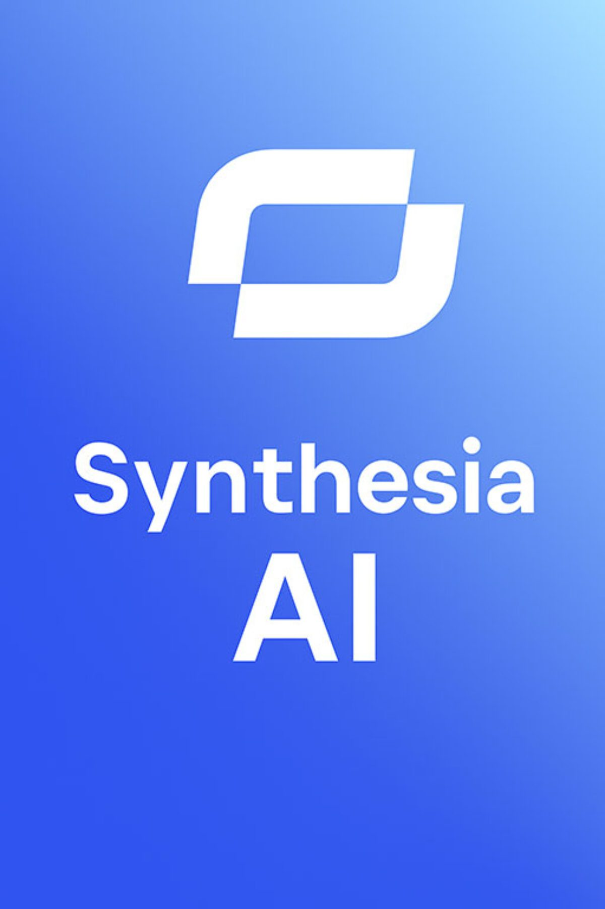
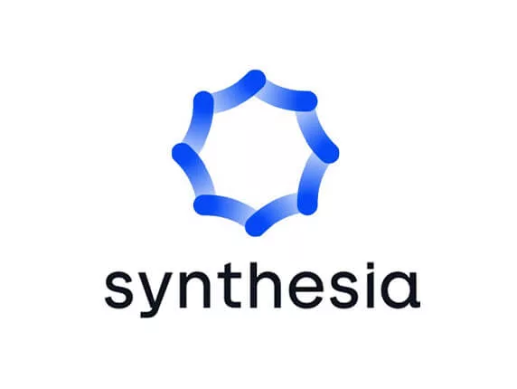

Galería Synthesia




Synthesia es una plataforma de inteligencia artificial para crear videos con avatares digitales, voz y texto. Se utiliza en presentaciones, capacitación, educación y contenido profesional.
Ir a Synthesia OficialAvatares digitales
Texto a narración
Contenido profesional

Genera videos usando presentadores digitales.
Convierte texto en narraciones para videos.
Sirve para crear material educativo y profesional.
Ayuda a producir videos explicativos y corporativos.